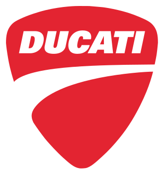

Ducati Motor Holding S.p.A. es una empresa italiana fabricante de motocicletas, fundada en 1926 en Bolonia por el ingeniero Antonio Cavalieri Ducati , Carlo Crespi y tres de sus hijos, pero no fue hasta 1952 cuando diseñaron su primera motocicleta. Actualmente se considera una de las marcas más importantes en el sector del motociclismo comercial y deportivo. Audi compró Ducati en abril de 2012.
En 1926 fue fundada como una sociedad fabricante de aparatos de radio y radiotécnica en general. En 1935 se traslada la producción a Borgo Panigale (cerca de la anterior fábrica de Bolonia) donde se construye una nueva y moderna factoría y con ésta, Ducati comenzará a expandirse en el mercado internacional. Durante la Segunda Guerra Mundial la planta de Borgo Panigale fue bombardeada y destruida; se pudo salvar la maquinaria y se reconstruyó la fábrica. En 1946, aprovechando que Siata (Società Italiana Applicazione Tecniche Auto-Aviatorie) había desarrollado un pequeño motor auxiliar de cuatro tiempos, perfecto para acoplar a las bicicletas y conocido como "Cucciolo" (cachorro de perro), de 48 cc (39 x 40 mm) que rendía 1 CV a 4500 rpm y tenía un bajo consumo, Ducati llega a un acuerdo con Siata para compartir la producción. Con él Ducati adquiere experiencia en el sector mecánico.
En 1952 Ducati diseña su primer scooter, el "Cruiser", dotado de arranque eléctrico, cambio automático, y un motor de 173 cc, consiguiendo grandes
ventas y afianzando aún más a la compañía en el sector. En 1953 Ducati diseña su primera motocicleta, el modelo 98 (de 98 cc), que se presenta en
el Salón de Milán en una versión todavía poco desarrollada denominada "Cavallino", pero que más tarde venderían con motores de 125 cc. En 1954 Ducati
cambia su nombre por el definitivo de Ducati Meccanica Spa, y su nuevo director pasó a ser Giusepppe Montano. Este mismo año aparecen las dos versiones
definitivas del modelo 98, una sport y otra turismo, ambas con el motor de 98 cc, cuatro tiempos refrigerado por aire (y radiador refrigerador de aceite
el modelo sport) y distribución por varillas. Posteriormente, Ducati contrató al ingeniero que diseñó su revolucionario motor monocilíndrico monoárbol 4
tiempos, el doctor Fablio Taglioni, que provenía de F.B. Mondial. También diseñó el bicilíndrico en V que llevaban la 750 SS y la Pantah, en el que está
basado el motor actual de las Ducati, e introdujo la distribución del motor desmodrómico, además de otros proyectos para la competición, que dieron a Ducati
un palmarés muy importante y una reputación de motocicleta bella, de calidad.
Asimismo en los años 50 se autoriza la licencia de fabricación a Mototrans en España (Barcelona) para fabricar algunos de sus modelos con alguna variación.
Por ejemplo el "24 horas" de 250 cc era exclusivo de esta empresa. Se montaron los modelos de 50 cc (denominados "48" cc) de 2 tiempos y los monocilíndricos
desde 125 cc hasta 350 cc, en fases sucesivas a través de los años.
Durante los años 70 Ducati se centró en el sector del motociclismo deportivo, consiguiendo grandes victorias y mucha fama mundial. Al finalizar la exitosa temporada, Ducati crea una versión comercial de la que utilizaron en el campeonato, la limited edition 900 SS Mike Hailwood Replica. En 1983 la compañía es comprada por Claudio and Gianfranco Castiglioni, y pasa a formar parte del Cagiva Group, con el que bajo su dirección conseguirían importantes victorias en el sector del motociclismo deportivo creado
En 1995, pese al éxito de sus nuevas producciones: la "Monster", una moderna versión de motocicleta Naked diseñada por el argentino Miguel Galluzzi y llamada así inspirada por los muñequitos “Monster in my pocket” con los que jugaba el hijo del diseñador.Se diseñó a partir de otras piezas de motos Ducati que ya existían (chasis, faro, horquilla) y la 916, una superdeportiva comercial de alto rendimiento y tecnología punta, obra maestra del célebre diseñador Massimo Tamburini y con elementos rompedores como salida de escapes bajo el colín, que tendría sucesivas versiones 996, 998 y una de motor más pequeño, la 748; Ducati cae en una profunda crisis financiera debido a la desafortunada inversión de capital en las compañías hermanas pertenecientes al Castiglioni Group, con lo que en 1996 Ducati fue comprada por Texas Pacific Group, pasando a manos de una nueva dirección administrativa, con la que se recupera económicamente. A su vez, Ducati empieza a explorar la gama de motocicletas Sport Touring con la serie ST.